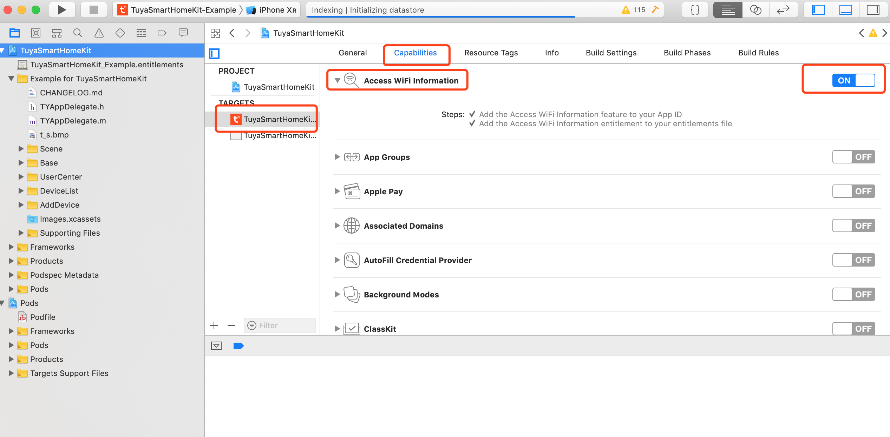

FAQ
1. Why are errors reported in running the pod install?
- Please confirm that the latest version cocoapod is used. Run the
pod --versioncommand to check the version of pod, and ensure that the version 1.3.0 or beyond is used.
2. Why the "Error Domain=NSURLErrorDomain Code=-999 is canceled" error is reported when invoking the SDK interface?
- Please conform that the object you request is a global variable, or the it will be released early, for example,
self.feedBack = [[TuyaSmartFeedback alloc] init];
3. How to enable the debugging mode and print logs?
- Invoke the following codes:
[[TuyaSmartSDK sharedInstance] setDebugMode:YES];when the SDK is initiated.
4. The device do not report the status when the control instruction is sent.
- Please check the data type of function points. For example, the data type of function points shall be value, and the @{@"2": @(25)} instead of @{@"2": @"25"} shall be sent for the control command.
5. In iOS 12, [[TuyaSmartActivator sharedInstance] currentWifiSSID] can't get ssid.
Xcode 10 should open
access wifi informationcapability to get ssid. This can be found at:Xcode-> [Project Name] ->Targets-> [Target Name] ->Capabilities->Access WiFi Information->ON
6、After update sdk to version >=2.8.0, app crashed immediately after sdk init.
After SDK 2.8.0, we have added security image check and use the new appkey/secret. Please refer to Preparation work section and go to tuya iot platform to get the appkey/secret/security image which is required by sdk init.
7、sdk demo compile failed: `library not found for -XXX
- Confirm you open the
.xcworkspaceinstead of.xcproject. See: CocoaPods Guides
8、iOS 13 Adaptation
- See: iOS 13 Adaptation
9、Why does the SDK obtain that the local language is English, rather than the language of the mobile phone system?
- Because the SDK is based on the local language obtained from [[NSBundle mainBundle] preferredLocalizations], you need to create an international language in the project.
10. Does the SDK support infrared device control?
- Now TuyaSmartHomeKit SDK does not support infrared device control
11. Why did the device control send multiple function points (DPS) and did not receive all data function point responses?
- When the device controls the transmission of multiple functions, it is necessary to first determine whether there is a conflict between the function points. For example, for lighting devices, the brightness of the light and the function points of heating and cooling can be put together to send.
- However, when the switch, brightness and temperature are put together, there will be some problems that the function points do not respond.
- Therefore, it is recommended to send the function without function conflict together.
12. If there is no Bluetooth function, can you reduce the package size without relying on the SDK Bluetooth module?
- Yes, you can only rely on the following two modules for device distribution and control functions
# home management, device, room, group management related functions
pod 'TuyaSmartDeviceKit',
# Relevant functions of device activator
pod 'TuyaSmartActivatorKit',
- The following modules can be referenced according to actual needs
# Single point Bluetooth related functions
pod 'TuyaSmartBLEKit',
# Sigmesh related functions
pod 'TuyaSmartBLEMeshKit',
# Intelligent scene related functions
pod 'TuyaSmartSceneKit',
# device and group timing related functions
pod 'TuyaSmartTimerKit',
# Message center related functions
pod 'TuyaSmartMessageKit',
# Fault feedback related functions
pod 'TuyaSmartFeedbackKit',
14、iOS sdk build error Undefined symbols xxx
- Generally, due to the version of sdk referenced is different, it's need confirmed whether each library referenced is a unified version (for example: 3.12.1, 3.12.5..), if not,
pod updateand recompiling.
15、Xcode 11 not included application loader
Application Loaderis no longer included with Xcode 11.Transportertool announced that replaces Application Loader.
16、Signature check error
- Please check the
bundleId、appKey、appSecret、Security img, any one of the mismatches will fail the verification. Please refer to Preparation work section
17、pod install failed with "CDN: trunk Repo update failed / trunk URL couldn't be downloaded"
CocoaPods 1.8.0 use CDN Repo as default，if you failed to connect it for network issue, please use Master Repo instead. Edit
Podfileand set Master Repo as primary source:- source 'https://cdn.cocoapods.org/' + source 'https://github.com/CocoaPods/Specs.git'